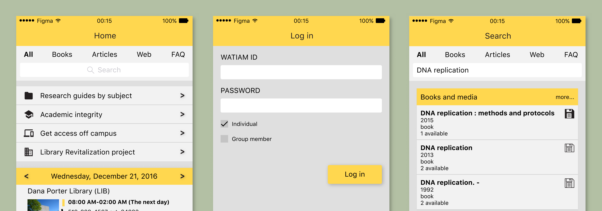
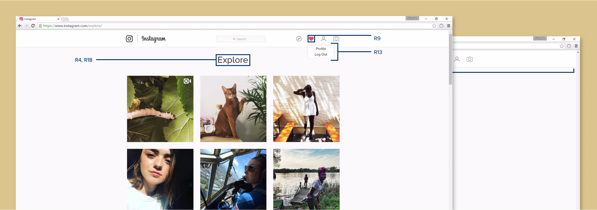
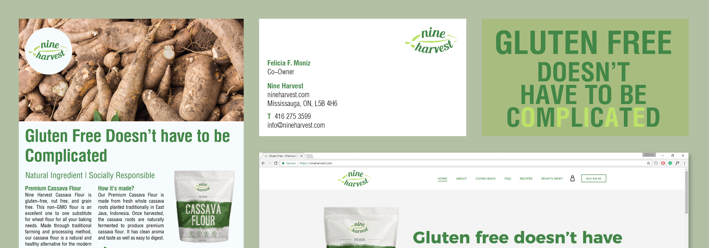
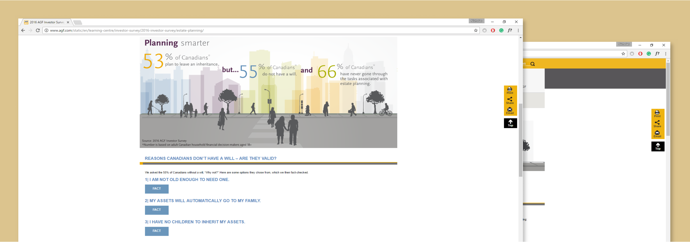

UWaterloo Library Mobile App Prototype
The University of Waterloo library mobile application prototype was created as a supplementary to lib.uwaterloo.ca. The mobile app purpose is to create a better experience in using a digital library.

Instagram Web App Redesign
Instagram WebApp was redesigned using the human factor analysis to improve its safety, performance, and user’s satisfaction.

Nine Harvest: Creative Director
Created a coherence design throughout all platforms.

AGF Investment: Web Developer
Working on the development, user experience, and analytics of AGF.com and quant-shares.ca.

Print Design
A collection of prints designed by Nicholas Sia.
Logo Design
A collection of logos designed by Nicholas Sia.